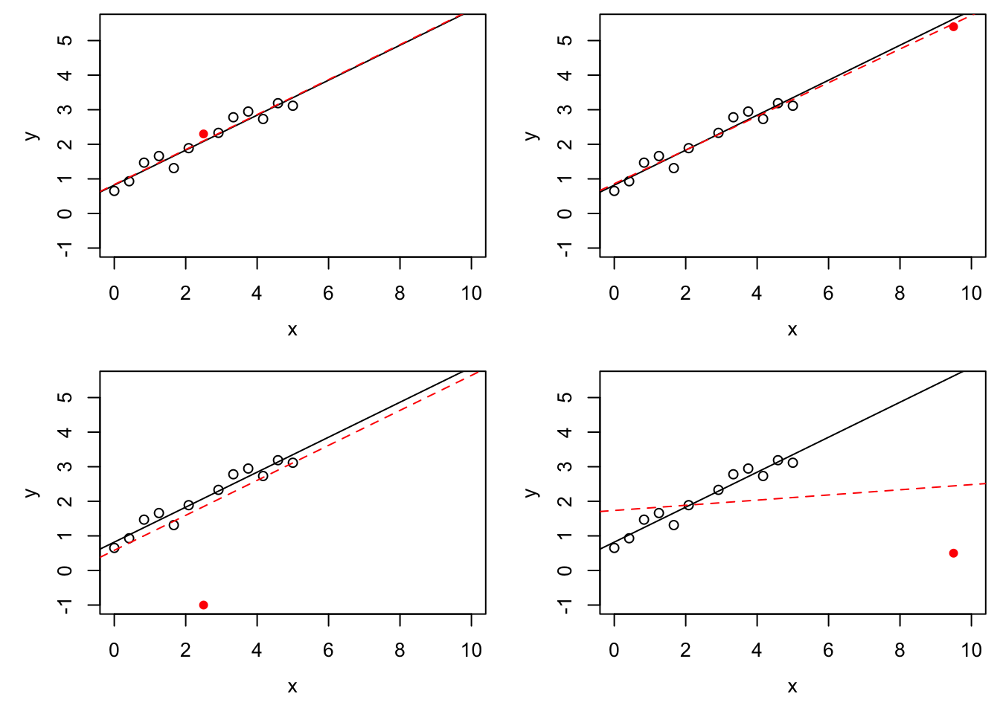
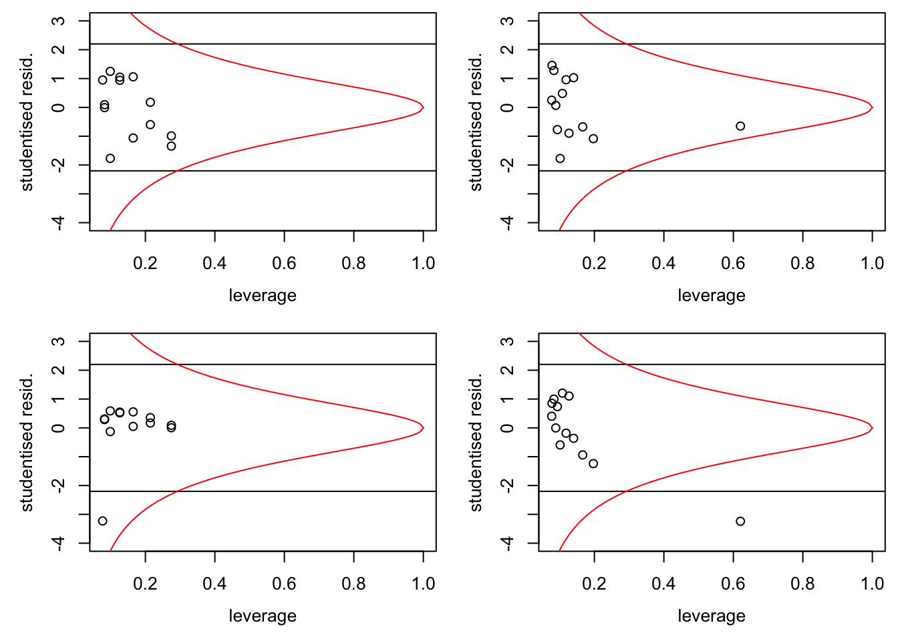
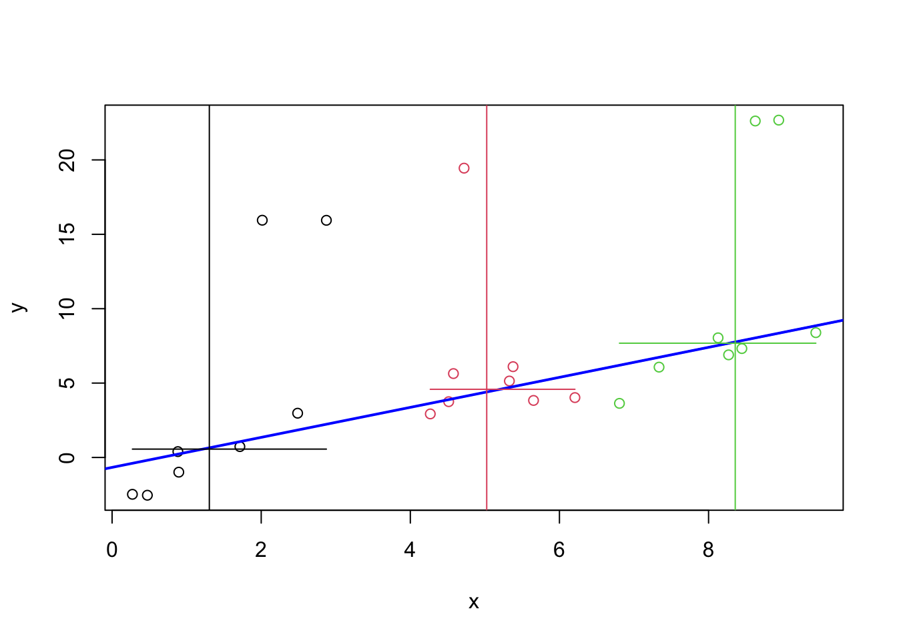

Section 17 Robust Regression
The overall aim of this part of the module is to find regression estimators which work well in the presence of outliers.
17.1 Outliers
As before, we consider the model \[\begin{equation*} y_i = x_i^\top \beta + \varepsilon_i, \end{equation*}\] and we try to estimate \(\beta\) from given data \((x_i, y_i)\) for \(i\in \{1, \ldots, n\}\).
An outlier is a sample \((x_i, y_i)\) that differs significantly from the majority of observations. The deviation can be either in the \(x\)-direction, or the \(y\)-direction, or both. Outliers can either occur by chance, or can be caused by errors in the recording or processing of the data. In this subsection we will discuss different ways to detect outliers.
17.1.1 Leverage
Definition 17.1 The leverage of the input \(x_i\) is given by \[\begin{equation*} h_{ii} = x_i^\top (X^\top X)^{-1} x_i, \end{equation*}\] where \(X\) is the design matrix.
Since \(x_i\) is the \(i\)th row of \(X\), the leverage \(h_{ii}\) equals the \(i\)th diagonal element of the hat matrix \(H = X (X^\top X)^{-1} X\).
Lemma 17.1 The derivative of the fitted value \(\hat y_i\) with respect to the response \(y_i\) is given by \[\begin{equation*} \frac{\partial}{\partial y_i} \hat y_i = h_{ii} \end{equation*}\] for all \(i\in \{1, \ldots, n\}\).
Proof. We have \[\begin{equation*} \hat y_i = (H y)_i = \sum_{j=1}^n h_{ij} y_j. \end{equation*}\] Taking derivatives with respect to \(y_i\) completes the proof.
The leverage of \(x_i\) describes the potential for \(y_i\) to affect the fitted line or hyperplane. If \(h_{ii}\) is large, changing of \(y_i\) has a large effect on the fitted values. This is in contrast to the influence of a sample, which describes actual effect on the regression line: in the section about Cook’s Distance, we considered a sample to be “influential”, if the regression estimates with and without the sample in question were very different.
Since we have \(\sum_{i=1}^n h_{ii} = p+1\), the average value of the leverage over all samples is \((p+1) / n\). Using a more careful argument, one can show that \(h_i \in [1/n, 1]\) for every \(i \in \{1, \ldots, n\}\).
Example 17.1 We use simulated data to illustrate the effect of outliers and the difference between leverage and influence.
set.seed(20211130)
n <- 12
x <- seq(0, 5, length.out = n+1)[-(n/2+1)]
y <- 1 + 0.4 * x + rnorm(n, sd = 0.3)
m <- lm(y ~ x)
# we try four different extra samples, one after another:
x.extra <- c(2.5, 9.5, 2.5, 9.5)
y.extra <- c(2.3, 5.4, -1, 0.5)
par(mfrow = c(2, 2), # We want a 2x2 grid of plots,
mai = c(0.7, 0.7, 0.1, 0.1), # using smaller margins, and
mgp = c(2.5, 1, 0)) # we move the labels closer to the axes.
for (i in 1:4) {
plot(x, y, xlim = c(0, 10), ylim = c(-1, 5.5))
abline(m)
m2 <- lm(c(y, y.extra[i]) ~ c(x, x.extra[i]))
abline(m2, col="red", lty="dashed")
points(x.extra[i], y.extra[i], col = "red", pch = 16)
}
The black circles in all four panels are the same, and the black, solid line is the regression line fitted to these points. The filled, red circle is different between the panels and the red, dashed line is the regression line fitted after this point has been added to the data. In the top-left panel there is no outlier. In the top-right panel, the red circle is an \(x\)-space outlier. The point has high leverage (since the red lines in the top-right and bottom-right panels are very different from each other), but low influence (since the red line is close to the black line). The bottom-left panel shows a \(y\)-space outlier. The red circle has low leverage (since the red line is similar to the top-left panel) and low influence (since the red line is close to the black line), but a large residual. Finally, the bottom-right panel shows an \(x\)-space outlier with high leverage and high influence.
17.1.2 Studentised Residuals
Sometimes, \(y\)-space outliers can be detected by having particularly large residuals. We have \[\begin{equation*} \hat\varepsilon = (I - H) Y = (I - H) (X\beta + \varepsilon) = (I - H) \varepsilon, \end{equation*}\] where we used equation (4.4) for the last equality sign. Thus we have \[\begin{equation*} \mathop{\mathrm{Cov}}(\hat\varepsilon) = \mathop{\mathrm{Cov}}\bigl( (I - H) \varepsilon\bigr) = (I - H) \sigma^2 I (I - H)^\top = \sigma^2 (I - H). \end{equation*}\] Considering the diagonal elements of the covariance matrix, we find \(\mathop{\mathrm{Var}}(\hat\varepsilon_i) = \sigma^2 (1 - h_{ii})\), where \(h_{ii}\) is the \(i\)th diagonal element of the hat matrix \(H\). This motivates the following definition.
Definition 17.2 The studentised residuals are given by \[\begin{equation*} r_i := \frac{\hat\varepsilon_i}{\sqrt{\hat\sigma^2 (1-h_{ii})}}. \end{equation*}\]
Lemma 17.2 We have \(r_i \sim t(n-p-1)\).
Proof. We have \[\begin{align*} r_i &= \frac{\hat\varepsilon_i}{\sqrt{\hat\sigma^2 (1-h_{ii})}} \\ &= \frac{\hat\varepsilon_i / \sqrt{\sigma^2(1-h_{ii})}}{\sqrt{\frac{(n - p - 1)\hat\sigma^2}{\sigma^2}/(n-p-1)}}. \end{align*}\] The numerator is standard normally distributed. From equation (4.7) we know that \((n - p - 1)\hat\sigma^2 / \sigma^2 \sim \chi^2(n - p - 1)\). Thus we find \(r_i \sim t(n-p-1)\), by the definition of the \(t\)-distribution.
Samples where the studentised residuals are large, compared to quantiles of the \(t(n-p-1)\)-distribution, might be \(y\)-space outliers.
With the help of lemma 9.4 we can express Cook’s distance as a function of studentised residuals and leverage. We get \[\begin{align*} D_i &= \frac{\hat\varepsilon_i^2}{(p+1)\hat\sigma^2} \cdot \frac{h_{ii}}{(1-h_{ii})^2} \\ &= r_i^2 \frac{h_{ii}}{(p+1)(1-h_{ii})}. \end{align*}\] If we denote samples with \(D_i \geq 1\) as influential, we can express the condition for influential samples as \[\begin{equation*} r_i^2 \geq (p+1) \frac{1-h_{ii}}{h_{ii}}. \end{equation*}\]
Example 17.2 Continuing from the previous example, we can plot studentised residuals
against leverage. As in section 9.1, we can use the
function influence() to easily obtain the diagonal elements of the
hat matrix.
par(mfrow = c(2, 2), # We want a 2x2 grid of plots,
mai = c(0.7, 0.7, 0.1, 0.1), # using smaller margins, and
mgp = c(2.5, 1, 0)) # we move the labels closer to the axes.
for (i in 1:4) {
xx <- c(x, x.extra[i])
yy <- c(y, y.extra[i])
n <- length(xx)
p <- 1
m <- lm(yy ~ xx)
# get the leverage
hii <- influence(m)$hat
# get the studentized residuals
sigma.hat <- summary(m)$sigma
ri <- resid(m) / sigma.hat / sqrt(1 - hii)
plot(hii, ri, xlim=c(1/n, 1), ylim=c(-4,3),
xlab = "leverage", ylab = "studentised resid.")
# plot a 95% interval for the residuals
abline(h = +qt(0.975, n - p -1))
abline(h = -qt(0.975, n - p -1))
# also plot the line where D_i = 1
h <- seq(1/n, 1, length.out = 100)
r.infl <- sqrt((p+1) * (1-h) / h)
lines(h, r.infl, col="red")
lines(h, -r.infl, col="red")
}
If the model is correct, \(95\%\) of the samples should lie in the band formed by the two horizontal lines. In the bottom-left panel we can recognise a \(y\)-space outlier by the fact that it is outside the band. In the two right-hand panels we can recognise the \(x\)-space outlier by the fact that it has much larger leverage than the other samples. Finally, samples which are to the right of the curved, red line correspond the “influential” observations.
17.2 Breakdown Points
In the example we have seen that changing a single observation can have a large effect on the regression line found by least squares regression. Using the formula \[\begin{equation*} \hat\beta = (X^\top X)^{-1} X^\top y, \end{equation*}\] it is easy to see that it is enough to change a single sample, letting \(y_i \to\infty\), to get \(\|\hat\beta\| \to \infty\).
Definition 17.3 The finite sample breakdown point of an estimator \(\hat\theta\) is the smalles fraction of samples such that \(\|\hat\theta\| \to \infty\) can be achieved by only changing this fraction of samples. Mathematically, this can be expressed as follows: Let \(z = \bigl( (x_1, y_1), \ldots, (x_n, y_n) \bigr)\) and consider all \(z'\) such that the set \(\bigl\{ i \bigm| z_i \neq z'_i \bigr\}\) has at most \(m\) elements. Then the finite sample breakdown point is given by \[\begin{equation*} \varepsilon_n(\hat\theta) := \frac1n \min \bigl\{ m \bigm| \sup_{z'} \|\hat\theta(z')\| = \infty \bigr\}. \end{equation*}\] The (asymptotic) breakdown point of \(\hat\theta\) is given by \[\begin{equation*} \varepsilon(\hat\theta) := \lim_{n\to\infty} \varepsilon_n(\hat\theta). \end{equation*}\]
Clearly we have \(\varepsilon_n(\hat\theta) \in [0, 1]\) for all \(n\) and thus \(\varepsilon(\hat\theta) \in [0, 1]\). Robust estimators have \(\varepsilon(\hat\theta) > 0\). Using the argument above, we see that \(\varepsilon_n(\hat\beta) = 1/n \to 0\) as \(n\to \infty\). Thus, the least squares estimate is not robust.
Example 17.3 For illustration we show a very simple version of a robust estimator for the regression line in simple linear regression. The estimate is called a resistant line or Tukey line. Assume we are given data \((x_i, y_i)\) for \(i \in \{1, \ldots, n\}\). We start by sorting the \(x_i\) in increasing order: \(x_{(1)} \leq \cdots \leq x_{(n)}\). Then we define \(x_\mathrm{L}\), \(x_\mathrm{M}\) and \(x_\mathrm{R}\) as the median of the lower, middle and upper third of the \(x_{(i)}\), and \(y_\mathrm{L}\), \(y_\mathrm{M}\) and \(y_\mathrm{R}\) as the median of the corresponding \(y\) values, respectively. Finally, set \[\begin{equation*} \hat\beta_1 = \frac{y_\mathrm{R} - y_\mathrm{L}}{x_\mathrm{R} - x_\mathrm{L}} \end{equation*}\] as an estimate of the slope, and \[\begin{equation*} \hat\beta_0 = \frac{y_\mathrm{L} + y_\mathrm{M} + y_\mathrm{R}}{3} - \hat\beta_1 \frac{x_\mathrm{L} + x_\mathrm{M} + x_\mathrm{R}}{3} \end{equation*}\] for the intercept.
We can easily implement this method in R. To demonstrate this, we use simulated data with artificial outliers:
set.seed(20211129)
n <- 24
x <- runif(n, 0, 10)
y <- -1 + x + rnorm(n)
outlier <- 1:5
y[outlier] <- y[outlier] + 15Sort start by sorting the data in order of increasing \(x\)-values:
idx <- order(x)
x <- x[idx]
y <- y[idx]No we can compute the resistant line:
xL <- median(x[1:8])
xM <- median(x[9:16])
xR <- median(x[17:24])
yL <- median(y[1:8])
yM <- median(y[9:16])
yR <- median(y[17:24])
beta1 <- (yR - yL) / (xR - xL)
beta0 <- (yL + yM + yR) / 3 - beta1 * (xL + xM + xR) / 3Finally, we plot the result.
plot(x, y, col = rep(1:3, each=8))
abline(beta0, beta1, col = "blue", lwd = 2)
abline(v = xL, col = 1)
abline(v = xM, col = 2)
abline(v = xR, col = 3)
segments(c(x[1], x[9], x[17]), c(yL, yM, yR), c(x[8], x[16], x[24]),
col = 1:3)
The horizontal and vertical line segments in the plot give the medians used in the computation. The blue, sloped line is the resistant line. One can see that the line closely follows the bulk of the samples and that it is not affected by the five outliers.
A variant of this method is implemented by the R function line().
Summary
- Leverage can be used to detect \(x\)-space outliers.
- Studentised residuals can be used to detect \(y\)-space outliers.
- The breakdown point of an estimator is a measure for how robust the method is to outliers.